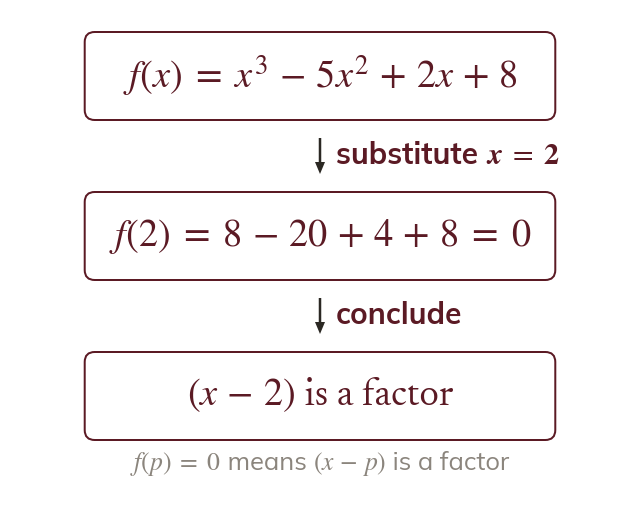
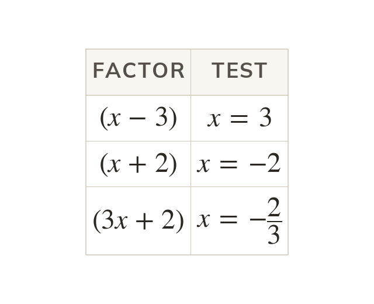
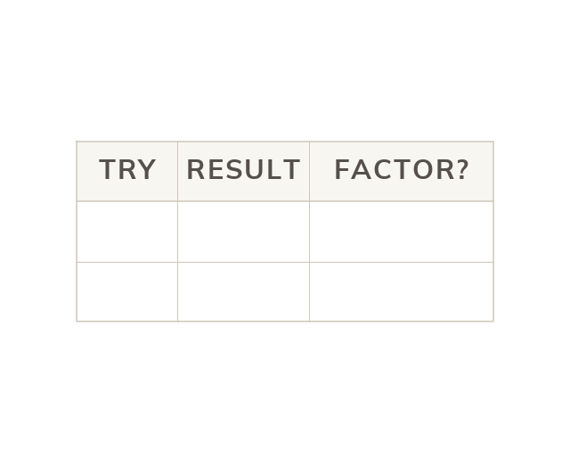
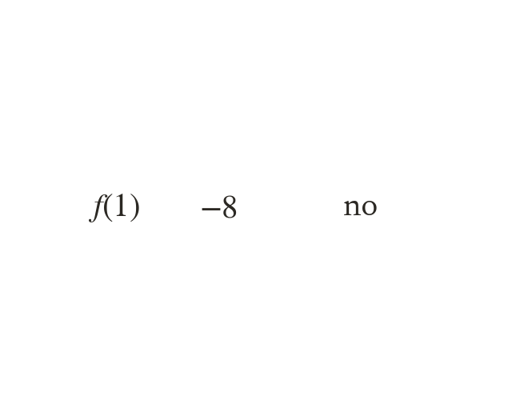
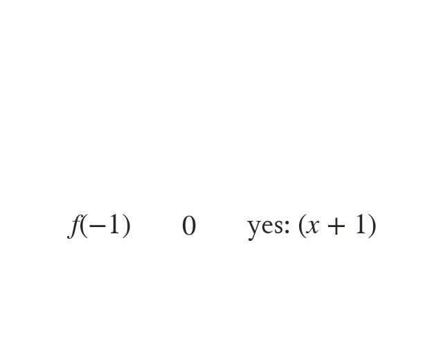
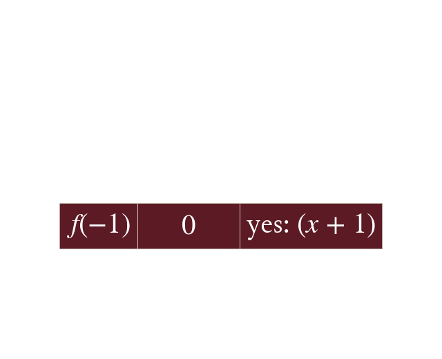
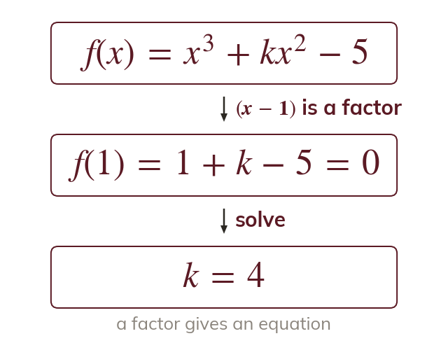
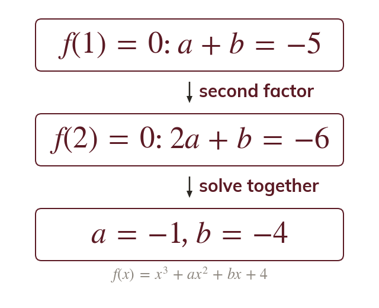

A zero value means a factor
When dividing by leaves no remainder. So is a factor, and if is a factor, then
The factor theorem replaces a whole division with one substitution: if then is a factor. It is how cubics are factorised and solved, and how unknown coefficients are found, in almost every Pure paper.
Work down the page at your own pace. Write every answer in your book first, then click to check it.
Read each card, then follow the worked examples one step at a time.

When dividing by leaves no remainder. So is a factor, and if is a factor, then

The factor goes with so the sign flips. For a factor test .




A whole-number root of must divide
So test the factors of until one gives
Pick an answer. If it's wrong, the feedback tells you which mistake it was.
Read each card, then follow the worked examples one step at a time.

If is a factor of then
Substituting turns an unknown coefficient into an equation to solve.

Two unknowns need two facts. Each factor gives one equation, and the pair is solved simultaneously.
Pick an answer. If it's wrong, the feedback tells you which mistake it was.
Finished? Next lesson: 7.4a Proof by Deduction.
For each skill, tap the one that is true for you today. Your Revise pages start with anything you mark Not yet.
Your ratings are saved on this device only.
Log in, then search for a code to practise that skill.